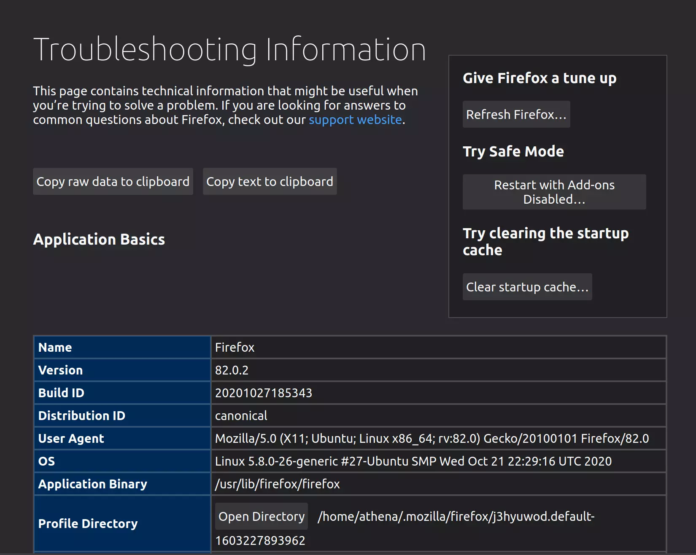
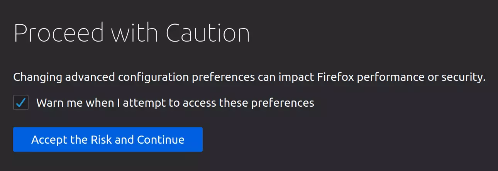
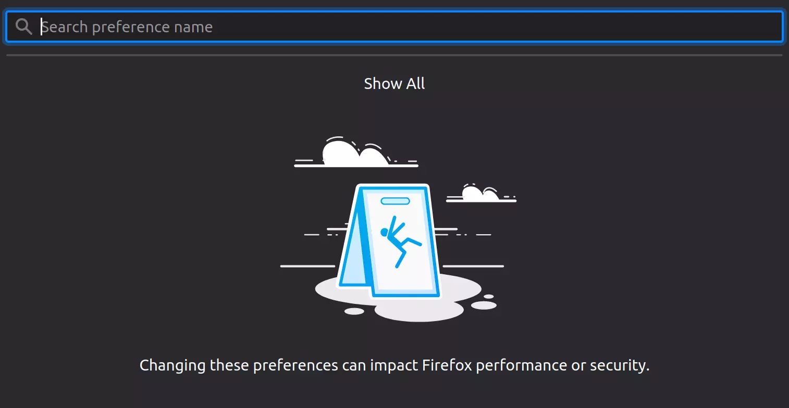
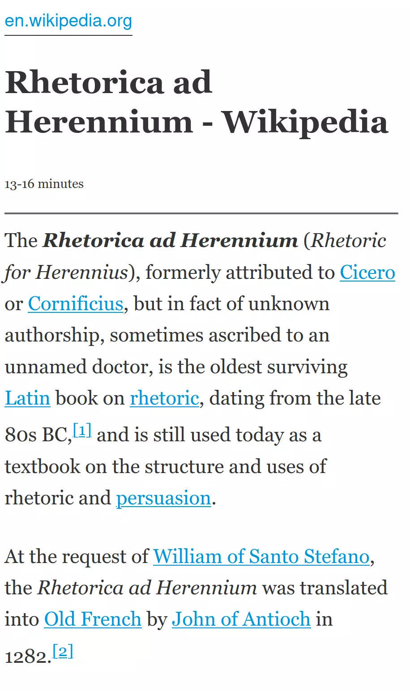
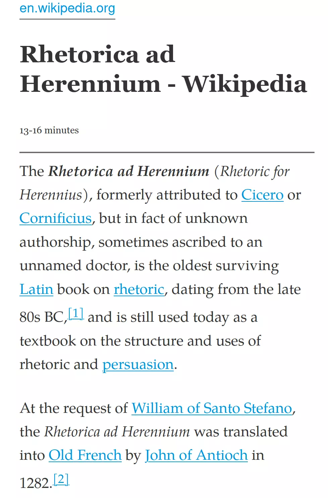
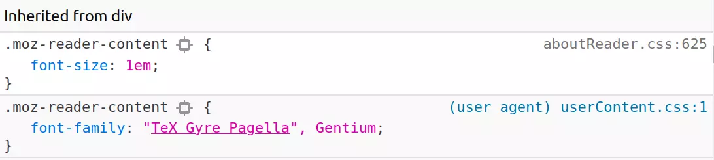

Python Algorithms
Citation
- Hetland ML. Python Algorithms: mastering basic algorithms in the python language. New York, N.Y: Apress; 2010. 316 p. (Expert’s voice in open source).
Notes
- GitHub Repository for code in the book.
I've been trying for a while now to figure out how to change the Firefox Reader font. The default (serifed-font) is Georgia, which is nice enough, but I like to change things up now and again. I would sometimes just edit the CSS in the Developer's Tools, but I finally stumbled upon how to do it so I'll save it here for my future self.
The procedure is pretty simple, this is it in outline:
chrome folder for it if it doesn't exist.userContent.css file to the chrome folder and add the CSS you want to use to it.chrome FolderThe configuration files you create go into a folder named "chrome". Firefox used to create it for you with example files but doesn't anymore so if you haven't created one you'll have to do so now - but where? It goes into your "profile" folder, but since you can have multiple configurations the path isn't fixed. There's multiple ways listed to find it on the Firefox Profile folder page. The way I did it was to enter about:support in the address bar.
This brings up the Troupbleshooting Information page.
The bottom of the screenshot is what we want.
The path displayed is your profile folder (/home/athena/.mozilla/firefox/j3hyuwod.default-1603227893962). You can click on the Open Directory button to open it with the GUI or use the path to navigate to it from your text editor. Within that folder create a folder named chrome. Why chrome when this is firefox? Chrome is apparently not related to google's chrome, but, according to Eric S. Raymond (and Wikipedia, etc.) refers to the GUI, or at least some aspects of it. Anyway.
In the chrome folder create a file named userContent.css (here's a mozillaZine article with some information about it) and add your CSS. Looking in the Firefox Inspector with the Reader View open it looks like it just uses the defaults.
But I don't want to change it for every web page so I added it to the .moz-reader-content selector.
.moz-reader-content {
font-family: "TeX Gyre Pagella", Gentium;
}
Which I also found using the Firefox Inspector.
So, you might think that we're done, right? But it turns out that even though Firefox gives you the ability to add custom CSS it doesn't load it by default. I couldn't find anything on the mozillaZine site about how to enable it (although it might be there, I just didn't find it), but there's a www.userchrome.org site that has a page on setting up userChrome.css (which also talks about creating the chrome folder). userChrome.css is how you can style the Firefox GUI itself (the chrome) so in this case anything specific to that file isn't relevant to what we're doing here, but the rest of the page is.
First navigate to about:config.
If you hadn't previously unchecked the Warn me when I attempt to access these preferences button you'll be greeted with a warning page.
Once you click on Accept the Risk and Continue or just hit enter, depending on your setup, you'll get to the Advanced Preferences page.
In the search box at the top of the page type in userprof.
If it's already set to true then you're all set, otherwise click on the toggle button on the right side.
This should flip it from false to true.
Changing the preferences to use the stylesheet doesn't load the actual stylesheet. To actually get it all working restart Firefox and try out the reader on a page.
In my case it changed the Wikipedia page on Rhetorica ad Herennium from this.
To this.
Not that dramatic in this case, but I still haven't found my favorite font. Also only the content was changed, not the headers… I'll have to look into that. Anyway, if you look in the Inspector the new CSS should show up.
So, that's one way to change the font for the Firefox Reader. Not exciting, but finding out how to do it was hard enough that I thought I should note it for later.
This is a test of running javascript in org-babel blocks. For some reason I couldn't find any documentation about setting it up so this is also a place for me to collect what to do.
Note: I actually did use this org-babel page for some of it, but it wasn't enough for me to really figure out what was going on.
Since javascript is an interpreted language you need an interpreter to run code blocks. Org-babel assumes you're using node.js so you need to install it and make sure it's on the PATH. They do support debian-based systems (including Ubuntu, which I use) but they don't use the traditional PPA system. Instead they have different installs for the different versions - but they do have a Long-Term Support (LTS) version which I'm hoping updates so that's what I installed.
curl -sL https://deb.nodesource.com/setup_lts.x | sudo -E bash -
sudo apt-get install -y nodejs
As of this writing it install version 12.19.0, versus the Ubuntu 20.04 version of 10.19.0.
Besides installing node you have to make sure that you add js to your org-babel set up.
(org-babel-do-load-languages
'org-babel-load-languages
'((js . t)))
If you already have other languages added this just goes in the same block.
(org-babel-do-load-languages
'org-babel-load-languages
'((plantuml . t)
(shell . t)
(emacs-lisp . t)
(latex . t)
(ditaa . t)
(js . t)
(python . t)
(jupyter . t)
))
Now that it's set up you can execute javascript in org-babel code blocks, designating them as js blocks (e.g. #+begin_src js :results output :exports both).
Here's a simple output block.
console.log("test")
test
var x = 'apple'
console.log(x)
var y = 'banana'
console.log(x + y)
apple applebanana
One thing to note is that this doesn't seem create sessions that persist across blocks. Even though I defined x and y in the previous block, this next block raises an error because it doesn't think I've defined y.
console.log(y)
console.log(x)
If you try and put a session argument in the org-babel header you'll get a message saying "Session evaluation with node.js not supported". According to the org-babel-js documentation you can put in special headers to run the code in an alternate REPL, but I tried it and the output ends up in a separate buffer rather than showing up in the org-document, which seems to kind of lessen the usefulness of it. Also the js-comint version dumps extra text into the REPL as well.
Okay, so this was a very basic hello world for javascript in emacs. The lack of sessions is kind of disappointing, but I don't know how useful this is going to be, anyway, since javascript is so tied to the browser, but there it is.